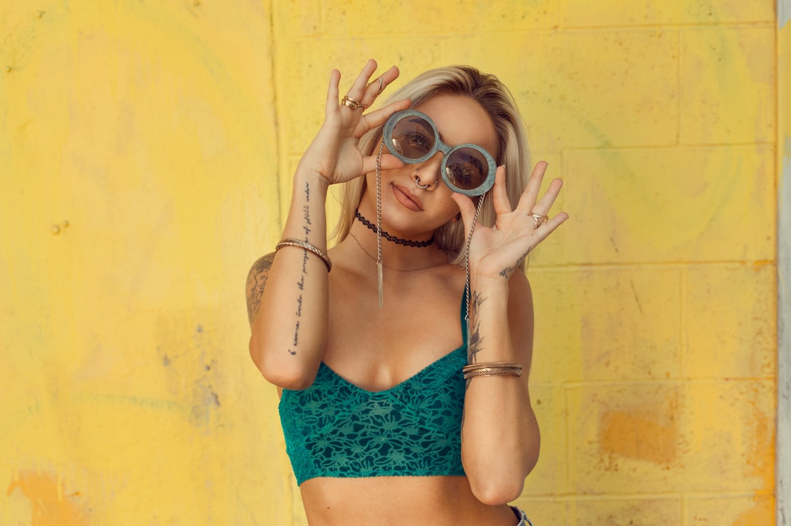

Mon expertise
Documentary Photography
La photographie documentaire sert à informer, éduquer et inspirer en offrant une représentation véridique et perspicace du monde. Elle est utilisée pour sensibiliser à des questions importantes, documenter des événements significatifs et préserver des moments historiques.

Event Photography
Racontez des histoires puissantes à travers votre photographie événementielle, en capturant des événements et des moments réels. Des petites réunions aux grandes célébrations, chaque image préserve l'énergie et l'émotion de la journée.
Aerial Photography
Obtenez une vue à vol d'oiseau avec une superbe photographie aérienne capturée par drone, parfaite pour l'immobilier, les événements et les paysages panoramiques qui révèlent une nouvelle perspective.

Corporate Photography
Améliorez l'image de votre marque avec une photographie corporate professionnelle pour les portraits, les photos d'équipe et les événements d'entreprise qui communiquent confiance et personnalité.
Attendez…
Il y a plus !

Editorial Photography
Donnez vie à vos histoires avec une photographie éditoriale captivante pour les magazines, blogs et publications.